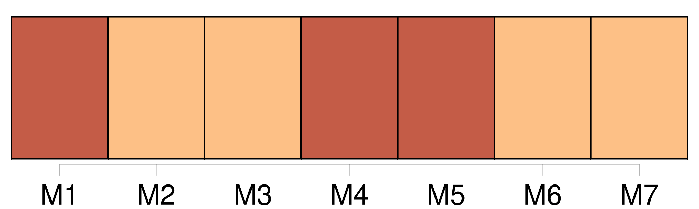
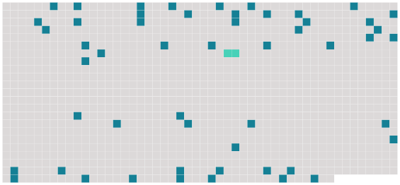

Longueur nb maillons : 53 mentions |
 |
Et voici la quatrième : La pluie bat [mes] vitres, et [je] reste chaudement, mollement rêveuse, dans la tiédeur des duvets. [J'] ai un livre, un livre que j'aime et qui me semble fait avec un peu de moi. Vous dirai [-je] lequel?? [1 phrases] Vous [me] gronderiez.
Puis, quand [j'] ai lu, [je] songe, et [je] veux vous dire à quoi.
« On a mis derrière [ma] tête des oreillers qui [me] tiennent assise, et [je] vous écris sur ce mignon pupitre que [j'] ai reçu de vous.
« Étant depuis trois jours en [mon] lit, c'est à mon lit que [je] pense, et même dans le sommeil [j'] y médite encore. « Le lit, [mon] ami, c'est toute notre vie. [1 phrases] « Si [j'] avais la plume de M. de Crébillon, [j'] écrirais l'histoire d'un lit. [2 phrases] « Vous connaissez [mon] lit, [mon] ami. Vous ne vous figurerez jamais que de choses [j'] y ai découvertes depuis trois jours, et comme [je] l'aime davantage.
Il [me] semble habité, hanté, dirai [-je] , par un tas de gens que [je] ne soupçonnais point et qui cependant ont laissée quelque chose d'eux en cette couche. [1 phrases] comme [je] ne comprends pas ceux qui achètent des lits nouveaux, des lits sans mémoires. [Le mien] , le nôtre, si vieux, si usé, et si spacieux, a dû contenir bien des existences, de la naissance au tombeau. Songez -y, [mon] ami ; songez à tout, revoyez des vies entières entre ces quatre colonnes, sous ce tapis à personnages tendu sur nos têtes, qui a regardé tant de choses. [10 phrases]
« Vous rappelez -vous ces vers que vous [m'] avez lus, l'autre année, dans quelque poète antique, [je] ne sais lequel, peut-être le doux Ronsard?
Et quand au lit nous serons Entrelacés, nous ferons Les lascifs, selon les guises Des amants qui librement Pratiquent folâtrement Sous les draps cent mignardises « Et songez à la mort, [mon] ami, à tous ceux qui ont exhalé vers Dieu leur dernier souffle en ce lit. [1 phrases]
Que de cris, que d'angoisses, de souffrances, de désespoirs épouvantables, de gémissements d'agonie, de bras tendus vers les choses passées, d'appels aux bonheurs terminés à jamais ; que de convulsions, de râles, de grimaces, de bouches tordues, d'yeux retournés, dans ce lit, où [je] vous écris, depuis trois siècles qu'il prête aux hommes son abri! « Le lit, songez -y, c'est le symbole de la vie ; [je] me suis aperçue de cela depuis trois jours. [7 phrases] « Que d'autres choses [me] sont encore venues!! mais [je] n'ai le temps de vous les marquer, et puis me les rappellerais [-je] toutes??
et puis [je] suis déjà tant fatiguée que [je] vais retirer [mes] oreillers, m'étendre tout au long et dormir quelque peu.
« Venez [me] voir demain à trois heures ; peut-être serai [-je] mieux et vous le pourrai [-je] montrer. « Adieu, [mon] ami ; voici [mes] mains pour que vous les baisiez, et [je] vous tends aussi [mes] lèvres. |
 |
Il est possible de télécharger la ressource sur la page Ortolang |
Si vous avez des questions ou vous voyez des erreurs, merci d'envoyer un mail à silvia.federzoni89@gmail.com |